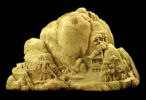

The Minneapolis Institute of Arts
Main Menu ~ Permanent Collection List ~ Interactive Museum Maps ~ Back ~ Next
Asian Art
 (c) 33k
Explore the culture, history, and religion of Asia in Japanese paintings, Buddhist sculptures, and Chinese bronzes, ceramics, and jades, including the largest carved jade mountain in the West. You can also see the world's only preserved Tibetan sand mandala. This gallery includes an interactive program.